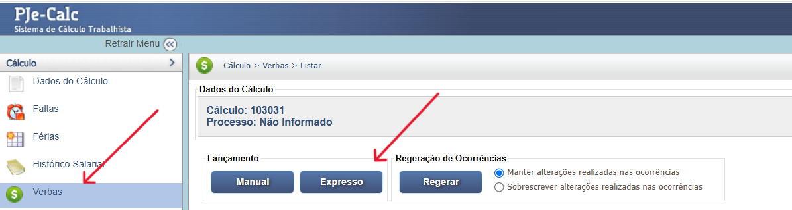

Intervalos de Descanso
Os intervalos de descanso (Intrajornada e Interjornada) são direitos fundamentais do trabalhador, estabelecidos pela CLT, visando a preservação da saúde física e mental e a segurança no ambiente de trabalho. O descumprimento dessas pausas gera a obrigação de pagamento de horas extras.
A distinção é simples: a Intrajornada é o descanso realizado dentro da jornada diária (para refeição e repouso), e a Interjornada é o descanso obrigatório entre o fim de uma jornada e o início da próxima.
Resumo das Regras de Duração
| Intervalo | Referência | Duração Mínima |
|---|---|---|
| Intrajornada (Refeição) | Art. 71 da CLT | Varia conforme a jornada (15 minutos a 1 hora). |
| Interjornada | Art. 66 da CLT | 11 (onze) horas consecutivas. |
Interjornada: O Descanso Entre Jornadas (11 Horas)
A Interjornada é o período de descanso obrigatório de 11 horas consecutivas entre o fim de um dia de trabalho e o início do próximo. Este período não pode ser fracionado.
- Natureza: Garante a reposição das energias e a segurança laboral.
- Consequência da Redução: As horas subtraídas ( aquelas que faltaram para completar as 11h) devem ser pagas como horas extras, acrescidas do adicional de 50%. Por exemplo, se o descanso foi de 8 horas, 3 horas devem ser pagas como extras.
- Verba: A verba devida pelo descumprimento possui natureza salarial (conforme jurisprudência) e gera reflexos.
Intrajornada: O Intervalo para Repouso e Alimentação
A Intrajornada, também chamada de "horário de almoço", é obrigatória nas jornadas contínuas e sua duração depende do tempo total trabalhado.
| Jornada Diária | Intervalo Mínimo | Intervalo Máximo |
|---|---|---|
| Acima de 6 horas | 1 hora | 2 horas |
| Entre 4 e 6 horas | 15 minutos | 15 minutos |
| Até 4 horas | Não Obrigatório | Não Obrigatório |
A redução do intervalo para menos de uma hora (em jornadas longas) só pode ocorrer mediante Acordo ou Convenção Coletiva de Trabalho, e apenas se a empresa atender às exigências do Ministério do Trabalho quanto à organização do refeitório e à saúde dos empregados.
Consequências do Descumprimento e Natureza da Verba
O descumprimento (supressão total ou parcial) de qualquer dos intervalos exige compensação financeira, mas com naturezas distintas após a Reforma Trabalhista (Lei 13.467/2017):
- Intrajornada: O pagamento é apenas do tempo suprimido, com acréscimo de 50%. A verba possui natureza indenizatória, o que, em tese, impede reflexos em verbas como férias, 13º, FGTS ou INSS.
- Interjornada: O pagamento é das horas suprimidas como extras (adicional de 50%). A verba tem natureza salarial (conforme entendimento majoritário do TST), gerando reflexos nas demais verbas.
Os intervalos são fundamentados na Consolidação das Leis do Trabalho (CLT) e em Súmulas do TST.
Fontes Normativas
CLT - Consolidação das Leis do Trabalho - Art. 66 (Interjornada):
- Artigo 66:
Define o intervalo obrigatório de 11 (onze) horas consecutivas de descanso entre o fim de uma jornada e o início da próxima.
CLT - Consolidação das Leis do Trabalho - Art. 71 (Intrajornada):
- Artigo 71, caput e § 4º:
Define o intervalo para refeição e repouso. O § 4º estabelece que a supressão gera pagamento apenas do período suprimido (50% de adicional) com natureza **indenizatória**.
Jurisprudência Consolidada
OJ 355 da SDI-1 do TST (Interjornada)
Tese (Natureza Interjornada):
"O desrespeito ao intervalo mínimo interjornadas previsto no art. 66 da CLT acarreta, por analogia, os mesmos efeitos previstos no § 4º do art. 71 da CLT e na Súmula nº 437, I, do TST, devendo-se pagar como extra as horas suprimidas, acrescidas do respectivo adicional."
O que isso significa: O período suprimido deve ser pago como hora extra. Embora o texto use a analogia do Art. 71, o TST entende que o pagamento pela supressão da Interjornada (horas subtraídas) possui **natureza salarial**, gerando reflexos.
Cálculo de Horas Suprimidas (Interjornada e Intrajornada):
O pagamento da hora suprimida (em qualquer dos intervalos) é feito utilizando o **valor da hora normal de trabalho** do empregado, acrescido do adicional mínimo de **50%**, nos termos da Súmula 437, I, do TST e do Art. 71, § 4º da CLT. O cálculo é idêntico ao de uma hora extra comum.
Fórmula de Cálculo da Hora Suprimida:
O valor da hora normal é obtido dividindo-se o salário mensal pelo número de horas da jornada de trabalho (ex: 220 horas).
- Valor da Hora Normal = Salário Mensal / Horas Contratuais (ex: 220)
- Valor da Hora Suprimida = Valor da Hora Normal + (Valor da Hora Normal * 50%)
- Total Bruto = Valor da Hora Suprimida * Número de Horas Suprimidas
Deduções Incidentes:
As deduções (INSS e IRPF) dependem da natureza da verba e se aplicam apenas sobre o valor que for considerado salarial.
- **Interjornada (Salarial):** O valor da verba e seus reflexos (se habituais) integram o salário de contribuição, sofrendo incidência de INSS e IRPF, conforme as regras da Receita Federal.
- **Intrajornada (Indenizatória):** Por ter natureza indenizatória (Art. 71, § 4º da CLT), o valor pago pelo intervalo intrajornada suprimido **não sofre incidência** de INSS ou IRPF.
A natureza jurídica da verba devida pelo desrespeito ao intervalo é crucial para definir se há reflexos:
- Interjornada (Art. 66 - 11 Horas): A verba possui natureza **salarial** (OJ 355 da SDI-1 do TST). Portanto, gera reflexos nas demais verbas.
- Intrajornada (Art. 71 - Almoço): A verba possui natureza **indenizatória** (Art. 71, § 4º da CLT, após a Lei 13.467/2017). Portanto, **não gera reflexos** nas demais verbas.
A tabela abaixo se aplica apenas às horas extras da Interjornada (que têm natureza salarial) ou à Intrajornada, caso a jurisprudência local afaste a natureza indenizatória e determine o pagamento como verba salarial.
| Verba Trabalhista | Reflexo da Verba Suprimida (Interjornada - Natureza Salarial) |
|---|---|
| Repouso Semanal Remunerado (RSR) e Feriados | O valor das horas extras de Interjornada deve ser integrado ao cálculo do RSR e dos Feriados, se pagas com habitualidade (Súmula 172 do TST). **A Intrajornada indenizada não gera reflexo.** |
| 13º Salário | A verba de Interjornada (natureza salarial) integra a base de cálculo. A verba de Intrajornada (natureza indenizatória) **não integra** (Art. 71, § 4º da CLT). |
| Férias + 1/3 | A verba de Interjornada (natureza salarial) integra a base de cálculo. A verba de Intrajornada (natureza indenizatória) **não integra** (Art. 71, § 4º da CLT). |
| Aviso Prévio | A verba de Interjornada (natureza salarial) integra a base de remuneração. A verba de Intrajornada (natureza indenizatória) **não integra** (Art. 71, § 4º da CLT). |
| FGTS (Depósito Mensal e Multa) | Incide sobre o valor da verba de Interjornada (e seus reflexos em RSR/Feriados). A verba de Intrajornada (natureza indenizatória) **não gera incidência** (Art. 71, § 4º da CLT). |
Atenção: A Súmula 172 do TST estabelece que o Repouso Semanal Remunerado (DSR) calculado sobre as horas extras integra o cálculo das férias, 13º salário, aviso prévio e FGTS. Essa regra visa evitar o chamado **"bis in idem"** (cálculo em duplicidade).
Utilize esta ferramenta para calcular o valor bruto das horas suprimidas (Interjornada ou Intrajornada).
Cálculo Simples (Bruto)
Informe os dados para calcular o valor bruto da hora suprimida (50% de adicional).
Resultado: R$ 0,00
A verba de Intrajornada suprimida (Art. 71, § 4º da CLT) é paga como hora extra, mas é lançada no PJe-Calc como **"Horas Extras - Intervalo Intrajornada (Indenizatória)"** devido à sua natureza jurídica.
- Acessar Verbas e Escolher Lançamento: No menu de navegação, clique em Verbas e escolha a opção Expresso.
- Seleção da Verba: Escolha a verba Horas Extras - Intervalo Intrajornada (Indenizatória) e clique em Salvar.
- Parametrização da Verba: Ao clicar em Parâmetros da Verba, configure o adicional para 50% (se não estiver automático), o divisor e a jornada de trabalho.
- Registro de Ocorrências: Em Ocorrências da Verba, detalhe a data inicial, data final e o número total de horas suprimidas no período.
A seguir, confira o passo a passo para o lançamento da verba no PJe-Calc, utilizando a opção "Expresso":
- Acessar Verbas e Escolher Lançamento: No menu de navegação à esquerda, clique na opção Verbas para iniciar o lançamento. Após o comando, será exibida a tela para escolha do Lançamento da Verba. Escolha a opção Expresso. 
- Seleção da Verba: O sistema abrirá as opções de verbas, escolha a verba Intervalo Interjornada e clique no botão Salvar
-
Quadro de Verbas e Ações: O sistema exibirá um quadro
com os campos:
- Ações - contendo as opções de configurações da verba selecionada (parâmetros, ocorrências e exclusão)
- Parâmetros da Verba
- Ocorrências da Verba
- Excluir
- Verba Principal - verba selecionada para lançamento.
- Verba Reflexa - em que ao clicar no botão Exibir serão listadas todas as verbas reflexas ligadas a Verba Principal.
- Parametrização da Verba: Ao clicar no botão Parâmetros da Verba serão exibidas todas as configurações necessárias para a parametrização da Verba Principal.
- Registro de Ocorrências: Ao clicar no botão Ocorrências da Verba serão exibidas todas as configurações necessárias para registro das ocorrências da Verba Principal.